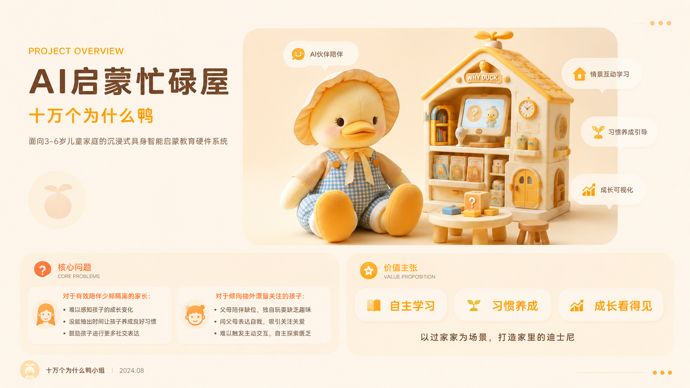
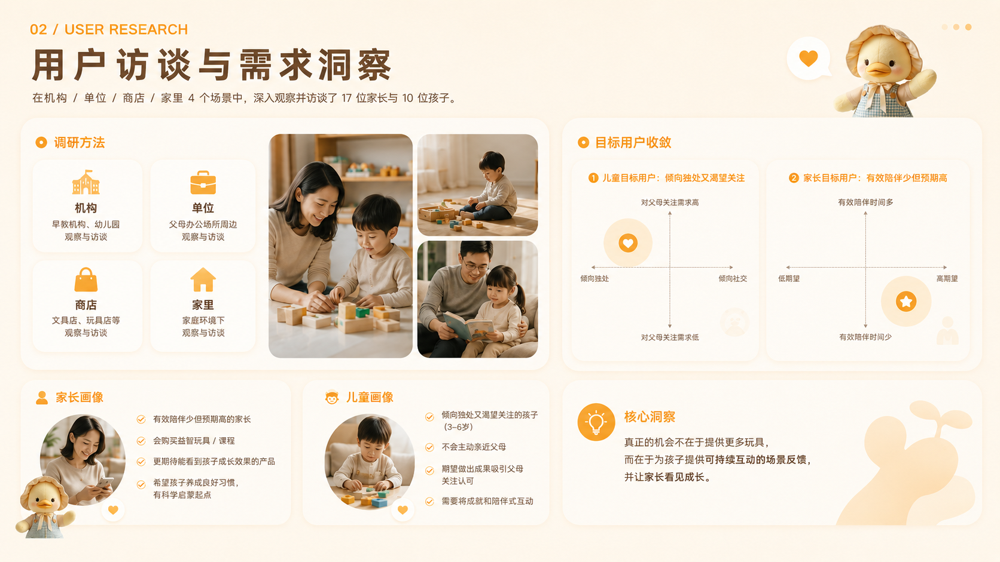
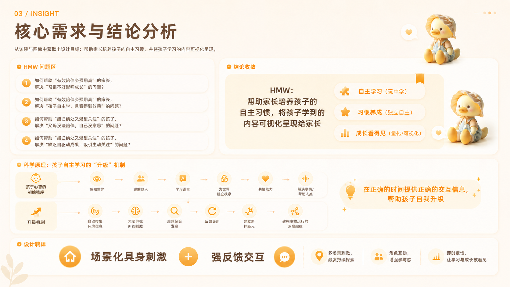
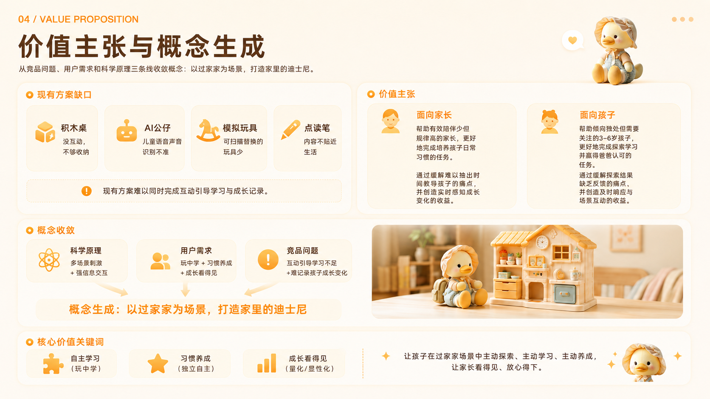
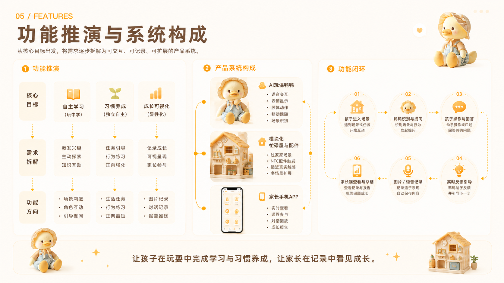

产品 · 01 · 2024 年 8 月 · Xbot 科创夏令营
十万个为什么鸭.
三到六岁的孩子在过家家里问「为什么」。鸭子只在这一场里答，答到孩子接得住的那一层就停。不做成什么都能聊的教育机器人。

概念形象。不是上线产品的截图。结营封面标题是「AI启蒙忙碌屋」。小组名就叫十万个为什么鸭。落款日期 2024.08.16。
产品 · 01 · 2024 年 8 月 · Xbot 科创夏令营
三到六岁的孩子在过家家里问「为什么」。鸭子只在这一场里答，答到孩子接得住的那一层就停。不做成什么都能聊的教育机器人。

概念形象。不是上线产品的截图。结营封面标题是「AI启蒙忙碌屋」。小组名就叫十万个为什么鸭。落款日期 2024.08.16。
我在组里做：用户调研、概念测试、产品形态设计与建模、信息整理、结营稿整理。结营稿署名写作「黎铭唏」。组员还有尹朔、熊梓涵、张心阳。尹朔做用户调研、信息整合、结营稿、概念测试。熊梓涵做用户调研、产品功能、概念测试、硬件技术路线。张心阳做用户调研、产品框架、产品功能、硬件技术路线、概念测试。尹韶枫做用户调研、概念测试、产品功能、算法实现与模型测试。算法和模型测试是尹韶枫的。不要讲成「我把通义训出来了」。
访谈 17 位家长、10 个孩子。结营稿这一章没有问卷份数，没有逐条访谈引用。旧作品集页上的 500 份问卷、68%、80% 满意度、Kano，结营稿正文里没有。两套数字冲突时，述职以 17 和 10 为准。问卷和 80% 若要讲，先找出原始记录，不凭旧作品集页复述。市场背景材料里写过 2023 年中国消费级智能教育硬件大约 469 亿，出处标的是 36Kr。小红书话题「重新养一遍自己」结营稿写浏览量 5.1 亿。这些是背景，不当自己的调研结论。
问到「做出来没有」，答：做到了结营方案和形态，没有做到入户样机。摄像头采集进云、视觉抽关键词、手机遥控、实时危险汇报、足式移动，是方案穷举和展示页上的设想。更早的作品集和简历写过最佳用户洞察奖、五万元启动资金。那是团队结果，可以放在最后一句，不当标题。旧作品集页把场景示意写成「真实场景下的用户测试与反馈记录」。结营稿末页没有样机测试数据和销售数据。这一页把它当概念图，不当已入户的测试照。

设计思维叠在双钻上：共情与观察在发现，问题定义与 How Might We 在定义，构思与评估在发展，原型、测试、迭代在交付。阶段之间会回跳，不是单向流水线。
Discover · 调研 · 发散
这一阶段禁止先画一只什么都能聊的鸭子。先看人、场景和已经在卖的东西。
一手：我们在机构、单位、商店、家里四个场景看过，访谈 17 位家长、10 个孩子。材料把人分成四格：对父母关注的需求高或低，倾向独处或倾向社交。选中的是「倾向独处、又渴望被关注」的孩子，加上「有效陪伴少、但预期高」的家长。家长会买各种硬件和课，想看见成长。孩子不主动亲近父母，想做出一点成果，换父母来看一眼。
二手：竞品四句。积木桌没什么来回也不好收；AI 公仔儿童的说法和声音识别不准；模拟玩具能扫描就播报的少；点读笔内容不贴近孩子正在过的日子。理论材料引用了儿童模仿、蒙氏敏感期，以及 Alison Gopnik 关于孩子像科学家、园丁与木匠的几本书。材料把「在正确的时间给正确的交互」写成：场景化的身体刺激，加上强反馈。这是当时的依据，不铺成文献综述。

画像与竞品。散点还不是简报。简报要等到 Define。
Define · 整合 · 收敛
结营稿的原句是：场景化引导孩子实践养成，加上把多模态 AI 公仔收敛到特定场景，保证模型效果。功能从三件事往下拆：自主学习、习惯养成、成长看得见。拆出来的三块是：独立空间不被打断、场景剧情往前推、记录留到玩完。
过家家被分成几层，并按月龄往上加：赋予属性、对象替换、元交流、角色扮演、社交互动。月龄刻度写过 36、48、60、72 个月。模仿的内容写过社交礼仪和工具使用。这是分级，不是一只鸭子要同时会的技能清单。
我们怎样才能让三到六岁的孩子在一场过家家里问「为什么」，而回答停在这个年龄接得住的一层？
我们怎样才能让家长看见成长，而不把鸭子变成实时监控？
Develop · 构思 · 发散后再评估
AI 公仔识别会漂。点读笔离生活太远。公仔什么都答，儿童的句子会把回答带跑。结营稿里两套都在：功能推演写了独立空间不被打断；方案穷举和功能介绍里又有摄像头上云、家长手机实时看画面、遥控鸭子说话和动作、危险识别马上汇报、对话实时同步。
便利店收银这一场。孩子问「为什么要找零」「为什么要扫」，鸭子用这一场里的话答。科学因果讲到这个年龄接得住的一层，再往下交给家长。鸭子不编一个更完整的解释。现在口述站不被打断。实时画面拿掉。危险可以留成一句异常，不留成全程直播。日度、周度、月度的记录还在，放在玩完之后。身体只留和这一场有关的：能听、能说、表情、能认出这一场的配件。
把「十万个为什么」理解成什么都能问。把结营稿里的监控操控当成已经做完的产品。轮子、遥控、全程监控不作为现在要辩护的方案。
家长会觉得鸭子不够聪明，也会觉得不透明。结营稿看起来「全」，重讲之后看起来「小」。小是故意的。这两句要主动说。
材料里的身体很长：高清摄像头、扬声器、麦克风、OLED 表情、通义千问做场景里的引导式回答、舵机、四轮或足式移动、NFC 和线圈让配件带上场景信息、磁吸换音色。玩具屋和配件负责把剧情往前推，喇叭放背景声。重讲时只留这一场用得上的。这是重讲判断，不是结营稿已经删掉的功能。


Deliver · 实现 · 结营交付
对方接着会问。为什么不实时给家长看：一看，独立空间就没了。为什么只有便利店：场景是用来把回答圈住的。答错了怎么办：复述孩子的问题，停在这一层，不往下编。编完再道歉，比一开始停更糟。这句是重讲时的说法，结营稿没有写成操作规则。

概念图。Build, test, iterate 停在概念测试，没有入户。